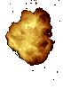
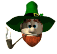

Esta página va dedicada a
todos los fumadores

En 1851 el matrimonio belga Jamus y Hilde Bocarmé envenenaron a Thorsten Mayer, que a su vez era hermano de Hilde y cuñado de Jamus. En la investigación del caso, el famoso detective M. Stas descubrió que se había utilizado un alcaloide llamado nicotina. Además, averiguó que, el asesino, había trabajado en la extracción de esta sustancia, tan venenosa, que los indios americanos la empleaban para envenenar sus flechas.
Nicotiane, es el nombre que se dio al tabaco en Francia cuando Juan Nicot, embajador en Lisboa, lo introdujo en Francia en 1560. A mediados del siglo XIX , y con este nombre se introdujo también en España...
Aquel mismo año, la Academia de Medicina de Francia confirmó que: " El tabaco era un veneno".
Notas
sobre el tema
Fumar es un vicio y dejarlo una virtud, no obstante Moliere decía que prefería "un vicio cómodo a una virtud fatigosa". Mark Twain aseguraba que dejar de fumar es muy sencillo, que el lo había hecho más de cien veces
 Relato
siguiente
Relato
siguiente Volver
al Índice
Volver
al Índice